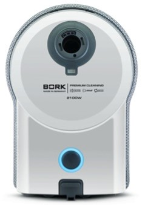
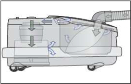
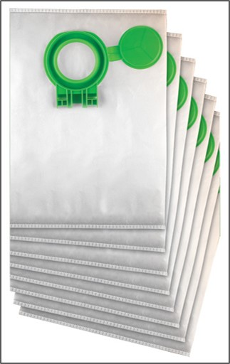
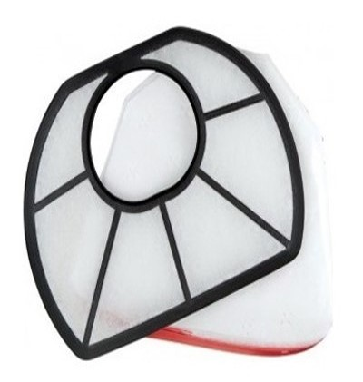
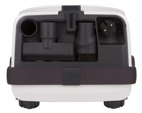
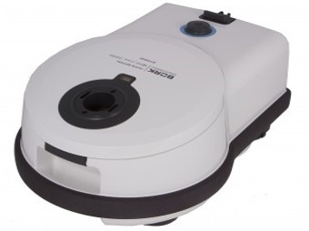
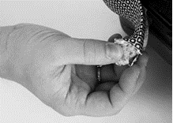
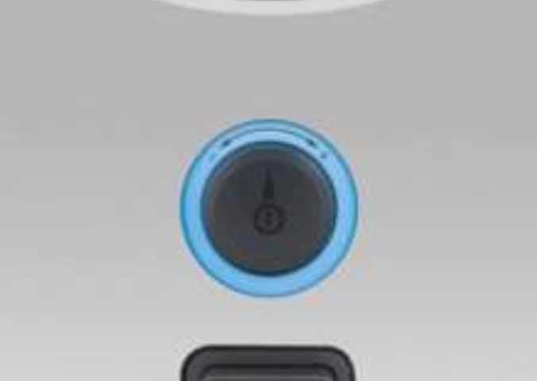
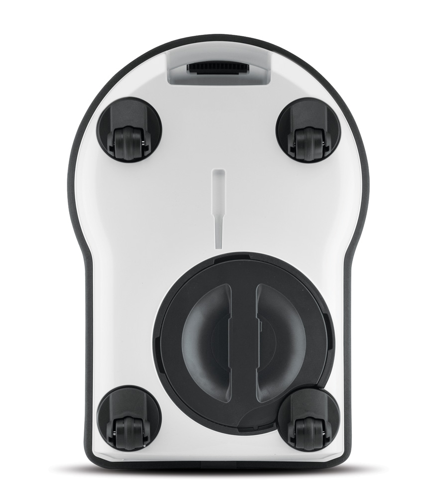

Пылесос BORK V712
Оптимальное распределение воздушного потока
Двигатель и пылесборник расположены, как в профессиональных пылесосах. При такой компоновке воздушный поток не проходит через слой пыли, а как следствие, не падает мощность всасывания.
Большой объём пылесборника
Большой объём пылесборника – 6 литров, делает новый пылесос очень экономичным в использовании. Индикатор заполнения пылесборника показывает, когда следует сменить пылесборник Крышка для пылесборника делает процесс смены пылесборника легким и гигиеничным.
Высокая степень фильтрации S-класса
Воздух проходит через три высокоэффективных фильтра: пылесборник с антиаллергенными свойствами ULTRA Bag, фильтр Hospital-Grade и выходной фильтр Micro-Hygiene-Filter. Фильтры изготовлены из материала, обладающего электростатическими свойствами, что позволяет удерживать мельчайшие частицы пыли, не снижая силу всасывания.
Удобство использования и хранения дополнительных насадок
Дополнительные насадки хранятся на корпусе, что позволяет легко их заменять в процессе уборки.
Удобная треугольная насадка для уборки корпусной мебели и полированных поверхностей с длинным ворсом позволяет легко пылесосить в углах.
Противоударный бампер
Двухслойный мягкий бампер из сверхпрочного материала надежно защищает Вашу мебель, стены и пылесос от механических повреждений.
Конструкция бампера обеспечивает дополнительный комфорт при уборке, эффективно снижая уровень шума пылесоса до 65 дБ.
Выходящий воздух распределяется по всему периметру пылесоса, не поднимая пыль, находящуюся на полу. При необходимости бампер можно легко почистить или заменить.
Электронное управление мощностью всасывания
Высокая мощность всасывания, низкий уровень шума, повышенная маневренность и автоматическая смотка шнура обеспечивают комфорт и удобство в использовании.
Эргономика и удобство
Пылесос оснащён LED индикатором мощности всасывания. Он вращается медленно при низком уровне мощности всасывания и быстро, когда мощность максимальна.
Четыре колеса с низким уровнем трения
Подвижные колеса имеют стальные оси, что обеспечивает их надёжность. А высокая манёвренность позволяет поменять направление движения пылесоса без всяких усилий.
BORK V712 Характеристики:
Потребляемая мощность, 2100 Вт
Мощность всасывания, 460 аВт
Уровень шума, 65 дб
Длина шнура: 15,5 м
Площадь уборки до 1000 м²
Дизайн: Achim Heine
Фильтрация: ElectroBag
Регулировка мощности всасывания: на корпусе
Объём мешка: 6 л.
Индикация включения: Да
Индикация заполнения пылесборника: Механическая
Плавный пуск двигателя: Да
Отключение при перегреве: Да
Вертикальная и горизонтальная парковка: Да
Ударопрочный корпус: Да
Защитный бампер: Да
Прорезиненные колёса: Да
Вращение колёс на 360⁰: Да
Телескопическая металлическая трубка: Да
Насадка BORK Combi: Да
Щелевая насадка: Да
Насадка для мягкой мебели: Да
Насадка для корпусной мебели треугольная: Да
Аксессуары насадки: V7P1, V7A1, AV700
Аксессуары пылесборники фильтры: V7D2, V7F1
Цвет: Белый
Вес: 6,9 кг
Страна производства: Германия